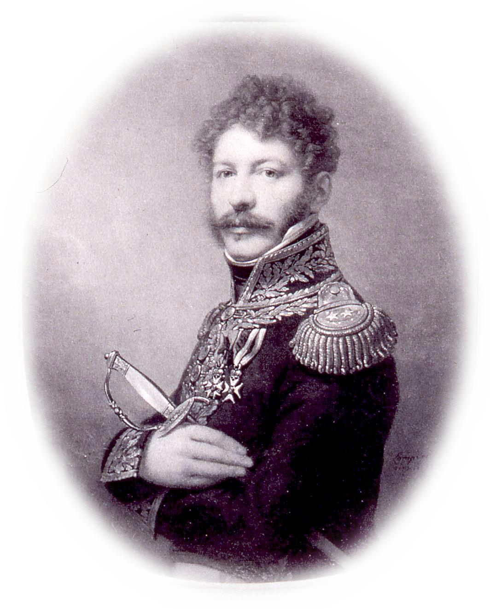
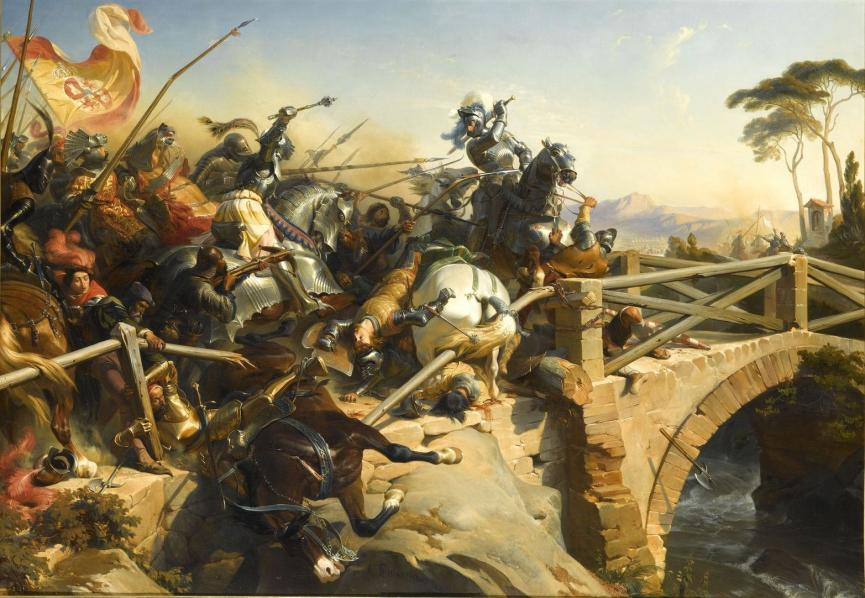
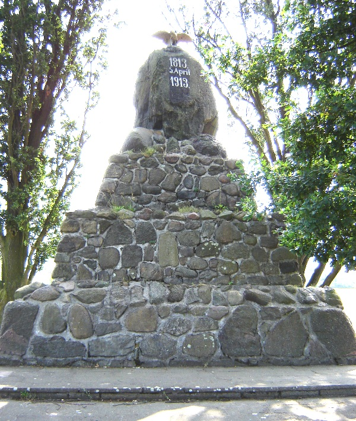
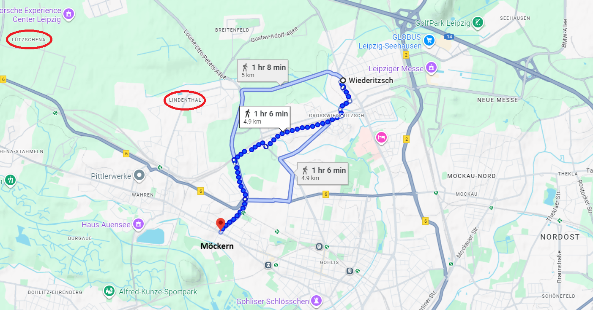
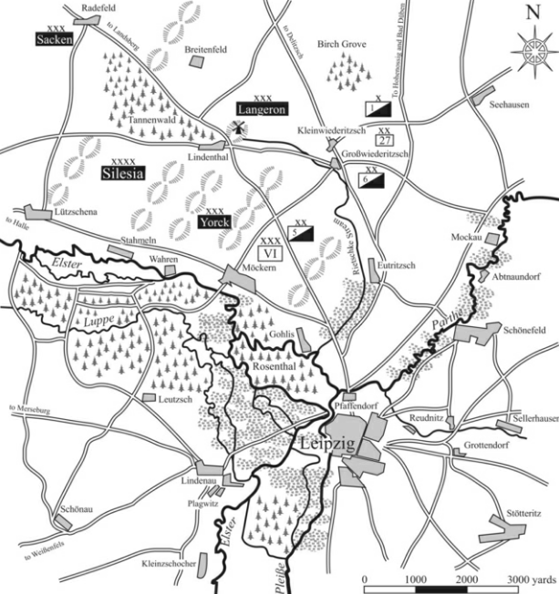

라이프치히 전투 (16) - 마르몽의 결단
게시: 2025-09-08T06:30:49+09:00
10월 16일 아침 8시, 블뤼허는 마르몽의 방어거점이 있던 린덴탈(Lindenthal)로부터 불과 5km 정도 떨어진 뤼츠쉐나(Lützschena)까지 말을 달려 상황을 살피고 정찰기병들의 보고를 들었습니다. 블뤼허는 생각보다 매우 조심스럽게 움직였는데, 이유는 나폴레옹 못지 않게 블뤼허도 상대방의 병력과 위치, 의도를 잘 알지 못했기 때문이었습니다. 사방에 풀어놓았던 정찰기병들의 보고에 의하면, 전방에 있는 마을마다 수백 명씩의 소규모 적부대가 배치되어 있는 정도라고 했는데, 정작 린덴탈 너머에 있는 대규모 적군의 규모는 그 일대의 소나무 숲에 가려져 정확하게 알 수가 없었습니다. 이에 대해 블뤼허가 취할 수 있는 옵션은 2가지였습니다. 중요한 것은 남쪽 전선이니, 눈 앞의 적을 무시하고 그대로 라이프치히 시내를 관통하여 남쪽으로 진격하는 것이 1번 옵션이었고, 2번 옵션은 그냥 눈 앞의 적과 싸우는 것이었습니다. 블뤼허는 그 성격상 어떻게든 나폴레옹 본인과 싸우고 싶어했으므로 1번 옵션을 택하고자 했습니다. 자신의 측면이 노출되는 문제는 곧 뒤따라올 베르나도트가 해결해줄 것이라고 믿고 싶어했고요. 그날 아침 블뤼허의 마음 한쪽을 불안하게 만드는 것은 역시나 바트 뒤벤 쪽에서 내려오고 있다는 그랑다르메 부대들에 대한 미확인 정보였습니다. 이미 라이프치히 남쪽에서 포성이 들리기 시작했으므로, 생각 같아서는 당장 라이프치히 시내를 관통하여 달려가, 라이프치히 남쪽에서 보헤미아 방면군과 싸우고 있을 나폴레옹의 뒤통수를 후려갈기고 싶었습니다. 그러나 당장 눈 앞에 자신의 앞을 가로막는 상당 규모의 적군이 있었고, 또 무턱대고 달려들었다가는 북동쪽에서 내려오고 있다는 적군에게 자신의 옆구리가 훤히 노출될 수 있었습니다. 게다가 북쪽 델릿쉬(Delitsch)까지 진격했던 코삭 기병대가 정찰한 결과, 바트 뒤벤에는 아직 그랑다르메가 주둔하고 있었고 바트 뒤벤과 라이프치히의 중간 지점인 크로슈티츠(Krostitz)에는 대규모의 그랑다르메 부대가 야영 중이라는 보고가 들어왔습니다. 그러니까 역시 블뤼허는 옆구리를 조심해야 했습니다. 그래도 블뤼허는 곧 베르나도트가 북부 방면군을 이끌고 바트 뒤벤 방면에 압박을 가해줄 것이라고 실낱 같은 희망을 가지고 있었습니다. 여태가지 베르나도트가 보여준 행동을 보면 그럴 가능성이 거의 없는데도 그런 희망을 가지고 있었던 것은 블뤼허가 어떻게든 빨리 나폴레옹과 싸우고 싶었기 때문이었습니다. 즉, 믿고 싶은 것을 믿고 있었던 것이지요. 그러나 그렇게 머뭇거리고 있을 때, 화가 잔뜩 난 영국 대사 스튜어트가 나타나 베르나도트의 현재 위치는 오늘 라이프치히 전투에 전혀 도움을 줄 수 없다는 소식을 전했습니다. 일이 이렇게 되자 어쩔 수 없이 블뤼허는 라이프치히 남쪽으로 가기 위해서는 당장 눈 앞의 적군, 그러니까 마르몽의 제6군단을 먼저 처리해야 했습니다. 블뤼허는 조심스럽게 접근했습니다. 그의 기본 작전은 군을 크게 둘로 갈라, 좌익에는 랑쥬롱의 러시아군을 내세워 프라이로다(Freiroda)와 라더펠트(Radefeld)를, 우익에는 요크의 프로이센군을 배치하여 린덴탈을 공격하는 것이었습니다. 자켄과 생프리스트의 군단들은 그들 뒤를 따르도록 했습니다. 한편, 블뤼허와 대치하고 있던 마르몽의 귀에도 남쪽 전선의 대포 소리는 뚜렷이 들어왔습니다. 비록 눈 앞의 적에 대해서 나폴레옹은 '일부 기병대일 뿐'이라고 일축했지만, 마르몽은 최소 8개 대대, 그러니까 거의 사단급 규모의 보병대가 나타났고 3시간 후면 현재 자신의 위치까지 다가올 수 있지만, 어쨌건 간에 명령을 받았으니 곧 리버트볼크비츠로 출발하겠다고 나폴레옹에게 오전 10시 30분에 보고서로 써서 보냈습니다. 실제로 오전 11시부터 마르몽의 부대들은 짐마차부터 시작하여 남쪽으로 행군을 시작했습니다. 그런데 하필 바로 이때 라더펠트에 있던 쾨오른(Louis Jacques de Coëhorn) 장군의 여단과 블뤼허의 전위대와의 교전이 막 시작되었습니다. 블뤼허처럼 마르몽도 2가지 옵션을 놓고 고민해야 했습니다. 옵션1은 돌아서서 블뤼허와 교전하는 것이었고, 옵션2는 블뤼허를 무시하고, 얼마 안되는 후위대에게 '최대한 적을 지연시키라'는 명령만 남기고 라이프치히 남쪽 전선으로 달려가는 것이었습니다.

(쾨오른 장군입니다. 이 분은 나폴레옹보다 딱 2살 연하였고, 왕정 시절 육군 대령의 아들로 태어났습니다. 그는 장교 집안 아들답게 13세에 소위로 임관했습니다만, 운은 그리 좋지 않았습니다. 중위로 승진한 지 얼마 안 되어 혁명이 일어났고, 그 와중에 그는 거의 형벌이나 다름없는 남미의 프랑스령 기아나로 배치되었고, 역시나 풍토병에 걸려 장교직을 사임하고 파리로 돌아와야 했기 때문입니다. 프랑스에서 건강을 회복한 그는 과거 계급을 인정받지 못하고 사병으로 다시 입대했는데, 능력있는 장교가 부족했던 혁명군에서 그의 용기와 재능은 곧 인정을 받아 다시 장교로 임관되었습니다. 그는 아우어슈테트, 프리틀란트 등 주요 전투에서 여러 차례 큰 부상을 입었는데, 그가 입은 가장 명예로운 부상은 1796년 뷔르템베르크의 네레스하임(Neresheim) 전투에서였습니다. 거기서 그는 민간인들을 약탈하던 프랑스군 사병들을 홀로 저지하다 몸에 11군데나 부상을 입고 버려져 결국 오스트리아군의 포로가 되었습니다. 그의 고결한 인품을 보여주는 일화입니다. 실제로, 그는 '알사스의 바야르(Bayard alsacien)'라는 별명으로 불렸습니다. 이 용감한 장군은 결국 이 전투에서 다시 큰 부상을 입고 연합군의 포로가 되었고, 결국 1~2주 뒤에 42세의 젊은 나이로 사망합니다.)

(쾨오른 장군의 별명 '알사스의 바야르'에서 바야르는 중세 말기, 이탈리아 전쟁에서 활약한 Pierre Terrail, seigneur de Bayard라는 이름의 프랑스 기사를 뜻합니다. 바야르는 고결한 성품과 용기, 쾌활하고 친절한 성격으로 인해 중세 기사도 정신의 모범으로 불리는 사람입니다. 이 그림은 1503년 이탈리아의 가릴리아노(Garigliano) 전투에서 스페인군의 추격을 막는 바야르의 모습입니다. 이 전투에서 프랑스군은 스페인군에게 패배했으나, 바야르가 용맹하게 싸워 다리에서 버텨준 덕분에 무사히 후퇴할 수 있었습니다.) 나폴레옹이 원했던 것은 옵션2였습니다. 게다가 옵션1을 택하기엔 어정쩡했습니다. 원래 마르몽은 린덴탈과 라더펠트 사이의 나지막한 능선에서 블뤼허를 막아낼 생각으로 그 능선에 군데군데 포대와 보루를 쌓고 요새화해놓았는데, 이제 막 그 방어선을 버리고 남쪽으로 행군을 시작한 상황이었던 것입니다. 방어에 최적이었던 능선을 이미 버리고 물러났으니, 곧 적군이 그 능선을 점령하고 거기에 포대를 배치하면 저지대에 놓인 아군이 역으로 불리한 위치에 놓이게 되는 상황이었습니다. 게다가, 만약 거기서 뒤로 돌아 블뤼허와 싸운다고 해도, 이길 수는 있었을까요? 블뤼허는 4개군단으로 이루어진 1개군(army) 약 5만4천을 이끌고 있었으나, 마르몽에게는 1개 군단 약 1만7천 밖에 없었습니다. 애초에 마르몽이 나폴레옹과 협의한 것도, 수암의 제3군단을 붙여줘서 자신에게 3만의 병력을 준다면 블뤼허와 베르나도트를 하루 이상 막아낼 수 있다는 것이었습니다. 마르몽은 그렇게 고민을 하다 제3군단에 생각이 미치자 퍼뜩 생각났다는 듯이, 후방의 네에게 급전을 보내 '제3군단이 아직 인근에 있는가?'를 물었습니다. 네는 곧 제3군단이 도착할 것이고, 아직 라이프치히 남쪽으로 보내지 않았다는 취지에서 '있다'라고 답신을 보내왔습니다. 게다가 후퇴하는 경로의 지형을 보니, 린덴탈-라더펠트 능선처럼 좋지는 않아도, 뫼케른(Möckern)-비더릿쉬(Wiederitzsch) 일대도 방어에 꽤 괜찮은 지형을 제공했습니다. 왼쪽의 뫼케른은 엘스터강에 닿아 있고, 오른쪽의 비더륏쉬 마을은 리츠쉬커(Rietzschke) 개울에 면했기 때문에, 양측면을 우회당할 위험 없이 정면만 방어하면 되었기 때문이었습니다. 여기서 갑자기, 마르몽은 '전부대 정지, 여기서 적과 싸운다'라고 결정합니다. 이 결정이 라이프치히의 승패에 매우 큰 영향을 끼칩니다.

(뫼케른(Möckern)에는 사진 속처럼 전몰자들을 위한 추모비가 있습니다만, 이는 10월의 라이프치히 전투를 기리는 것은 아니고, 1813년 4월 5일, 나폴레옹의 양자인 외젠이 이끄는 러시아 원정군의 잔여 병력이 프로이센-러시아군에게 쫓기면서 벌인 전투에서의 전몰자들을 위한 추모비입니다.) 훗날 마르몽은 회고록에서, '리버트볼크비츠로 당장 내려오라는 나폴레옹의 명령은 어처구니 없는 것이었다, 눈 앞에 블뤼허의 대군이 쳐들어오는데 등을 보이고 후퇴하는 것이 말이 되나, 게다가 그럴 경우 고지를 점령한 적의 포화를 뒤집어 써가며 후퇴해야 하는데!' 라며 자신의 결정을 정당화했습니다. 정말 그게 정당한 결정이었을까요? 혹시 그동안 갈등을 빚어오던 나폴레옹에 대한 반감 때문에 이런 충동적인 결정은 내린 것은 아니었을까요?

(뫼케른과 비더릿쉬를 연결하는 선은 약 4km 정도입니다. 이 방어선의 왼쪽은 엘스터강, 오른쪽은 작은 개울인 리츠쉬커에 닿아 있어 적의 우회를 막아주었습니다. 여기서 주목할 점은 방금 포기한 린덴탈 방어선에서의 거리입니다. 불과 3~4km 밖에 떨어져 있지 않다는 것입니다.)

(주요 하천의 모습과 함께 제시된 당시의 상황도입니다. 굳이 저기 말고 더 남쪽의 파르터(Parthe) 강까지 후퇴하여 거기서 방어선을 구축했다면, 더 적은 병력으로도 더 긴 시간을 버틸 수 있지 않았을까요?) 현장에 있었던 마르몽의 결정이 당시로서는 아마 제일 옳은 결정이었을 것입니다. 그러나 아쉬운 점은 매우 많습니다. 일단 마르몽의 과장과는 달리, 블뤼허의 진격도 생각보다 매우 느렸습니다. 마르몽이 후퇴하기 시작한 것은 11시부터였는데, 기존의 린덴탈 방어선에서 불과 불과 3~4km 떨어진 마르몽의 새로운 방어선에서 블뤼허의 공격이 시작된 것은 오후 2시 30분 경이었습니다. 게다가 앞에서 언급한 것처럼 바트 뒤벤에서 내려온다는 그랑다르메의 증원군에게 측면을 찔릴 수도 있다는 우려 때문에 블뤼허의 진격은 매우 조심스러웠고, 그래서 전면에 나선 것은 요크의 프로이센 군단과 랑쥬롱의 러시아 군단 밖에 없었습니다. 마르몽이 새로 정한 뫼케른 방어선에서든, 아니면 훨씬 더 남쪽의 파르터(Parthe) 강에서든, 1개 사단 정도만 남겨 딱 3~4시간만 블뤼허의 발을 묶어 놓고 마르몽의 제6군단과 수암의 제3군단이 모두 리버트볼크비츠로 달려갔다면 어땠을까요? 나폴레옹이 보헤미아 방면군을 완패시킬 시간은 충분하지 않았을까요? 물론 이건 다 부질없는 결과론적인 평가일 뿐입니다. 당시 마르몽은 남쪽 리버트볼크비츠의 상황이 얼마나 아슬아슬했는지 알지 못했고, 나폴레옹은 북쪽 린덴탈에서의 상황이 얼마나 급박했는지 몰랐습니다. 그렇게 마르몽이 북쪽에서 싸우기로 결정하면서, 나폴레옹은 절실하게 필요로 하던 증원군을 얻지 못하게 되었습니다. Source : The Life of Napoleon Bonaparte, by William Milligan Sloane Napoleon and the Struggle for Germany, by Leggiere, Michael V With Napoleon's Guns by Colonel Jean-Nicolas-Auguste Noël https://www.britannica.com/event/Napoleonic-Wars/Dispositions-for-the-autumn-campaign https://www.historyofwar.org/articles/battles_leipzig_16_october.html https://warhistory.org/@msw/article/leipzig-battle-of-the-nations https://www.napolun.com/mirror/napoleonistyka.atspace.com/Leipzig_battle.htm https://www.napoleon-empire.org/en/battles/leipzig.php https://fr.wikipedia.org/wiki/Louis_Jacques_de_Coehorn https://www.frenchempire.net/biographies/coehorn/ https://en.wikipedia.org/wiki/Battle_of_Garigliano_(1503) https://en.wikipedia.org/wiki/Battle_of_M%C3%B6ckern